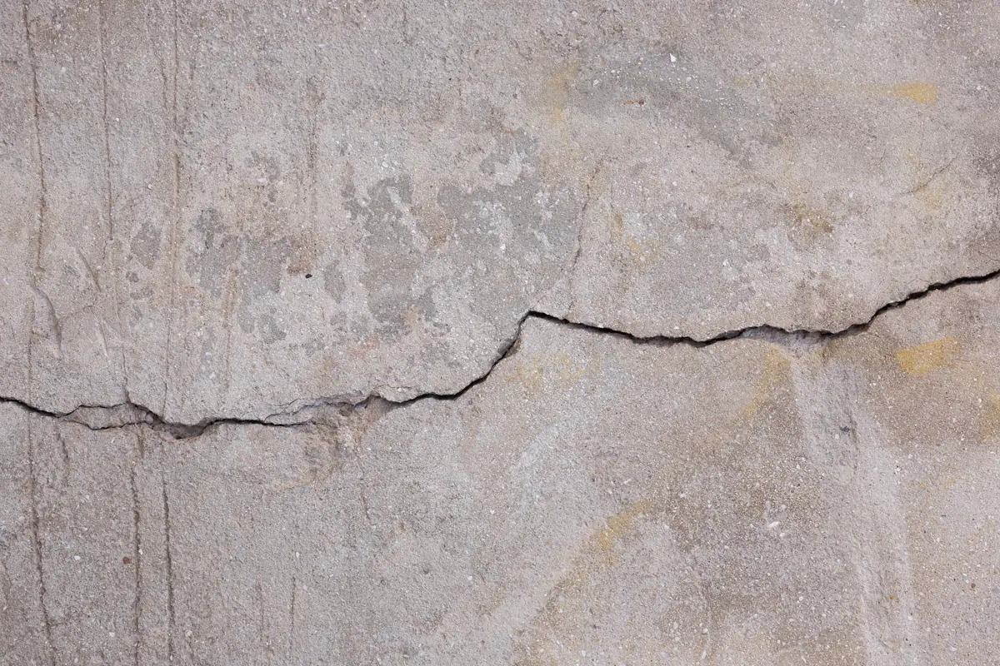
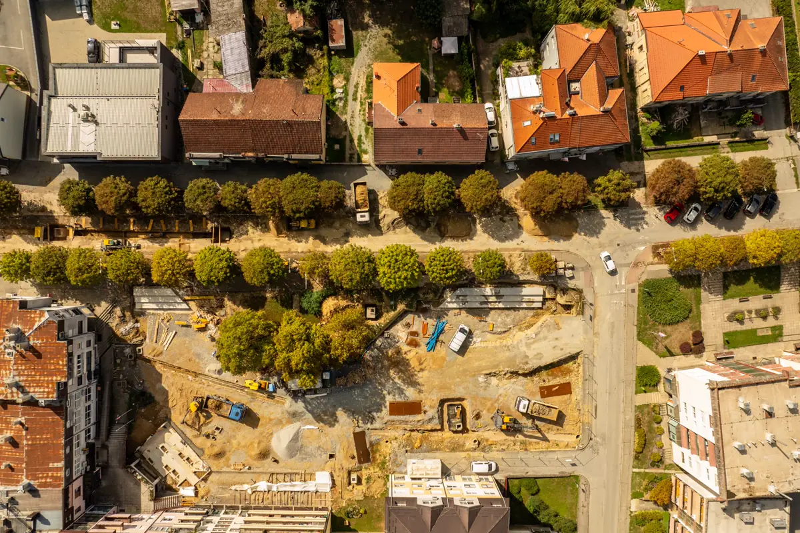
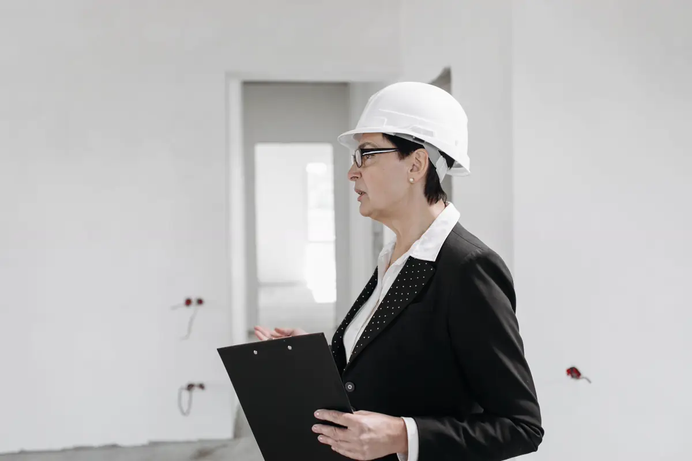

Por que vistoriar os vizinhos antes de começar
Obra com demolição, escavação de subsolo, rebaixamento de lençol ou cravação de estaca transmite vibração e movimenta o solo. Quando aparece uma trinca na casa ao lado, a pergunta é sempre a mesma: ela já existia? Sem registro anterior, a resposta vira discussão — e a conta costuma ficar com quem está construindo.
A vistoria cautelar registra o estado de cada imóvel vizinho antes do primeiro dia de obra, com data, fotos e medição. Para o vizinho, é a garantia de que um dano novo será reconhecido; para a construtora, é a prova de que o dano antigo não é dela. Este é um dos laudos técnicos com ART mais pedidos por construtoras e condomínios.
Equipe técnica pronta para atender toda a demanda em Vitória, Vila Velha, Serra, Cariacica e região: o orçamento, o agendamento e o acompanhamento ficam centralizados na Axial Engenharia, do primeiro contato à entrega do documento.

O que é registrado em cada imóvel
- Fachadas e muros de divisa, com foto geral e de detalhe;
- Fissuras e trincas existentes, numeradas, com abertura e comprimento medidos e posição em croqui;
- Pisos, forros e revestimentos — peças soltas, som cavo, desníveis visíveis;
- Esquadrias que já não fecham bem, um sinal comum de movimentação anterior;
- Infiltrações e manchas em paredes e lajes;
- Quando o risco justifica, marcos de referência para acompanhar recalque durante a obra.
O proprietário acompanha a vistoria e assina o termo de ciência. Quando ele se recusa a abrir o imóvel, a recusa é registrada — e a vistoria externa, feita da via pública, também vale como documento.

Quando fazer, e quem costuma pedir
| Situação | Raio típico | Momento |
|---|---|---|
| Prédio com subsolo ou contenção | Imóveis lindeiros e da quadra | Antes da demolição e da escavação |
| Fundação com estaca cravada | Lindeiros e próximos à área de cravação | Antes da cravação |
| Demolição de imóvel antigo | Lindeiros | Antes da demolição |
| Reforma pesada em condomínio | Unidades acima, abaixo e ao lado | Antes da obra — ver NBR 16280 |
| Obra pública ou viária | Ao longo do trecho | Antes da mobilização |
Vila Velha, Vitória e Serra concentram hoje boa parte dos edifícios em construção do estado, muitos com subsolo em terreno arenoso ou de aterro — o cenário em que a vistoria cautelar mais se paga.

Se a trinca aparecer durante a obra
Com a cautelar feita, a comparação é direta: a fissura nova é medida, fotografada e confrontada com o registro anterior. A partir daí, o diagnóstico da causa e do reparo segue o método das patologias estruturais. Sem a cautelar, o caminho costuma ser a produção antecipada de prova na Justiça, mais lenta e mais cara para os dois lados.
Perguntas frequentes sobre vistoria cautelar de vizinhança
A vistoria cautelar é obrigatória?
Não há lei municipal na Grande Vitória que a exija como regra geral, mas ela é prática recomendada em toda obra com demolição, escavação ou fundação profunda, e muitos contratos e seguradoras a pedem. Sem ela, a construtora fica sem prova do estado anterior dos vizinhos.
Quem paga a vistoria cautelar?
Normalmente quem vai construir. O custo é pequeno perto de uma única reclamação de dano sem prova, e o laudo fica disponível para as duas partes.
E se o vizinho não deixar entrar?
A recusa é registrada por escrito e a vistoria é feita pelo lado externo, da via pública e da divisa. O registro da recusa também protege quem está construindo.
Quantos imóveis precisam ser vistoriados?
Depende do tipo de obra. Os lindeiros — que fazem divisa — entram sempre; com escavação profunda ou estaca cravada, o raio aumenta. O escopo é definido pela engenharia antes do orçamento.
A vistoria cautelar tem ART?
Sim. O laudo é assinado por engenheiro habilitado, com ART registrada no CREA-ES, o que dá validade técnica ao documento numa eventual discussão.
Vistoria cautelar na Grande Vitória
Laudo cautelar de vizinhança para construtoras, condomínios e proprietários:
Sua obra começa em breve?
Mande o endereço e o tipo de obra. Retornamos com quantos imóveis vistoriar, prazo e valor.